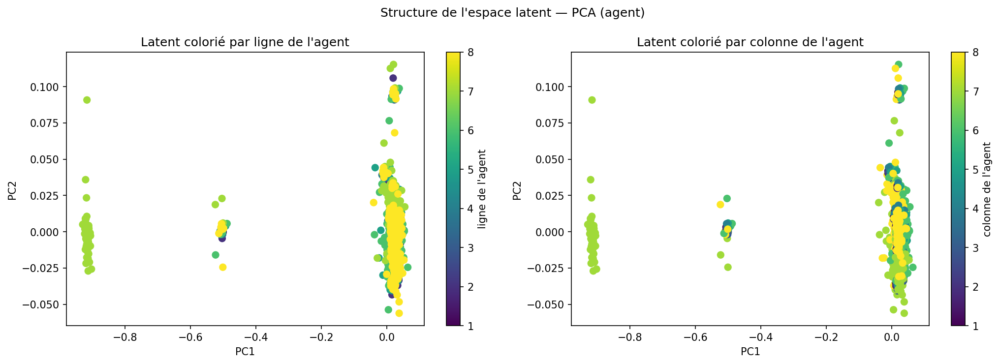
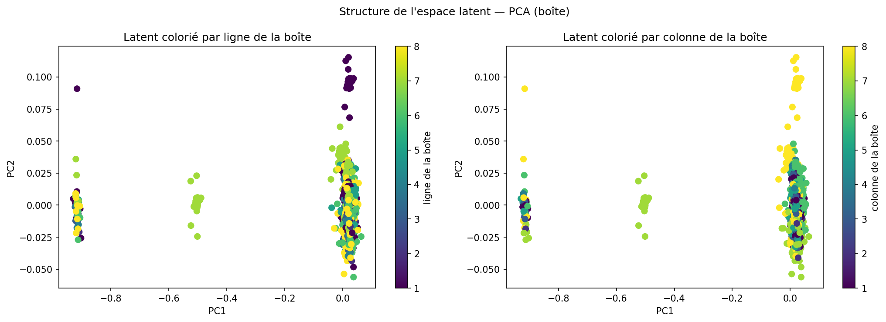

Acte 3
Ce que la machine
a vraiment appris
La loss a convergé. Le modèle prédit bien dans l'espace latent. Mais que contient cet espace, concrètement ? Comprend-il la position de l'agent ? La relation entre la boîte et la cible ? On va l'ausculter.
La méthode
Interroger le latent sans toucher au modèle
Après l'entraînement, l'encodeur produit un vecteur de 32 nombres pour chaque état du monde. Ce vecteur, c'est la "compréhension" du modèle. Pour savoir ce qu'il contient, on utilise une technique appelée sondage linéaire (linear probing).
Le principe : on gèle le modèle — aucun poids ne change — et on entraîne un simple modèle linéaire à prédire une propriété à partir du vecteur latent. Si ça marche bien avec un modèle linéaire, c'est que cette propriété est directement lisible dans la représentation. Si ça échoue, soit elle n'est pas encodée, soit elle l'est de façon non-linéaire et implicite.
La linéarité est la contrainte importante ici. Un réseau profond pourrait extraire n'importe quelle information — même cachée — par des transformations non-linéaires successives. Un modèle linéaire, lui, ne peut que lire ce qui est explicitement présent dans les directions de l'espace. C'est un test de "lisibilité directe".
On génère 4 032 états aléatoires, on les encode, et on entraîne des régressions (pour les positions continues) et des classifieurs logistiques (pour les propriétés binaires) sur un split 80/20.
Analyse en composantes principales
Un espace presque unidimensionnel
Avant le sondage, on réduit le vecteur latent 32D à 2 dimensions par PCA pour le visualiser. Chaque point représente un état encodé. On colore les points selon différentes propriétés pour voir si une structure émerge.
Le résultat est frappant : 92.45% de la variance totale est concentrée dans la première composante principale. Les 31 autres dimensions ne portent presque rien. L'espace latent 32D s'est, en pratique, réduit à une ligne.
Ce n'est pas nécessairement un problème — un monde simple peut s'organiser le long d'un axe principal. Mais ça signifie que le modèle a trouvé une représentation très compressée, peut-être trop pour les tâches de planification.


Les points ne sont pas aléatoirement dispersés : des états similaires se regroupent. Le latent a bien construit une sorte de carte mentale du monde — mais une carte partielle et imprécise.
Résultats des sondes
Ce qui se lit dans le vecteur latent
8 propriétés sondées. Pour les positions (continues) : R² entre 0 et 1, où 0 = pas mieux que la moyenne, 1 = parfait. Pour les propriétés binaires : accuracy, où 50% = aléatoire.
Le trait gris vertical sur les barres de classification marque le seuil aléatoire (50%). Dépasser ce seuil signifie que la sonde a appris quelque chose. Le dépasser de peu signifie que c'est à peine mieux que rien.
Le résultat clé
Le modèle connaît les positions. Pas les relations.
Parmi tous les résultats, un seul révèle quelque chose de fondamental sur les limites de cette représentation. On a testé deux variantes de la même propriété : "la boîte est-elle sur la cible ?"
L'interprétation est claire : avec une cible fixe, la sonde n'a pas appris "boîte == cible". Elle a appris "boîte est à (7,7)". C'est une information positionnelle déguisée en information relationnelle. Le modèle n'a jamais représenté le concept abstrait de relation entre deux objets.
Cette distinction est au cœur de la différence entre apprendre des régularités locales et apprendre des concepts abstraits. Le modèle sait que "quand l'agent pousse la boîte vers la droite, elle se déplace". Il ne sait pas que "la boîte et la cible sont des entités qui peuvent coïncider". C'est exactement la limite que Yann LeCun pointe dans les LLMs : manipuler des symboles sans comprendre leur signification.
Bilan
Portrait du modèle
L'espace latent n'est pas une boîte noire opaque. Il a une structure, et cette structure est partiellement interprétable. Mais ce qu'elle encode est sélectif.
En un mot : le modèle est un expert de la physique locale, pas un planificateur orienté objectif. C'est cohérent avec l'architecture JEPA : elle optimise la prédiction au pas suivant, pas la capacité à atteindre un but. C'est précisément ce que l'Acte 4 met à l'épreuve.